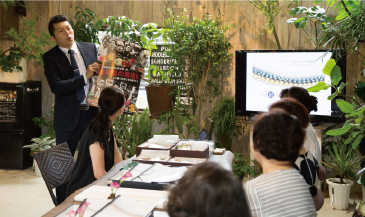
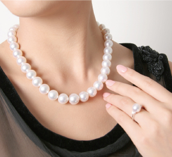

- よく「真珠はわかりにくい」と言われます。
これは、真珠には、母貝の種類による違いもあれば、色や形やサイズもさまざまで、ダイヤモンドのように分かりやすい品質基準がないことが原因のひとつかもしれません、 どんな真珠がその型の寄ってベストマッチなのか、おひとりおひとりの好みや価値観によって変わります。
- 良い真珠とは？美しい真珠とは？自分に合う真珠とは？
- ご自身にベストな真珠を知っていただくためには、
真珠について、正しい知識・情報を得ていただくことが一番だと私たちは考えています。
- 「はじめての真珠講座」は、
- 真珠の美しさをより多くの方に伝えること目的に、（一社）日本真珠振興会が正式に実施しているものです。
開催店舗は、この趣旨に賛同するＳＡ 資格保持者在籍店で、販売目的ではありませんので安心して受講ください。

- こんな方へ
- 真珠がどうやってできているのか知りたいい
- 冠婚葬祭などで購入予定。
- 自分の価値観にあった真珠の見方を知りたい
- 真珠の美しさの要素を知りたい
- 手持ちの真珠のお手入れの方法を知りたい

真珠がどうやってできているのかを知ることが出来ます
様々な種類の真珠に触れることができます
どんな真珠が質の良いものなのかを知ることができます
セルフケアメンテナンスの方法を知ることができます
- はじめての真珠講座では
楽しく学んで真珠がもっと身近になる。１回の講座で自分に合う真珠が分かるようになる
はじめての真珠講座 カリキュラム所要時間：約６０分 受講料：無料
１）真珠の歴史
２）真珠ができるまで
３）真珠の種類
４）真珠の美しさ
５）セルフケアとメンテナンス
- 真珠検定はこちら
知っておきたい真珠の知識
講座の様子 ご紹介
全国のお店で会えるアドバイザー
プロが教える真珠ジュエリーの楽しみ方
メディア掲載情報
オフィシャルブログ
書籍・教材OnLineShop
メルマガ登録